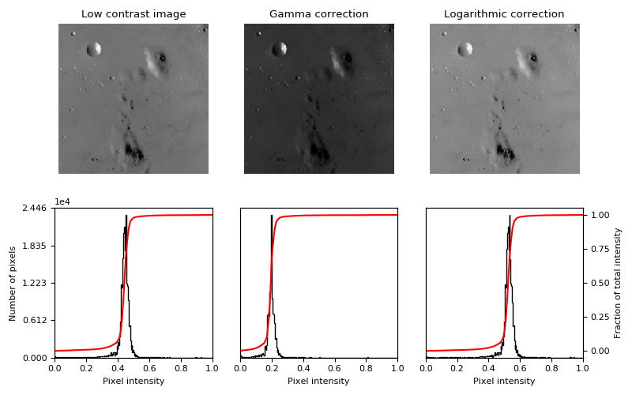

Note
Click here to download the full example code
This example adjusts image contrast by performing a Gamma and a Logarithmic correction on the input image.
import matplotlib
import matplotlib.pyplot as plt
import numpy as np
from skimage import data, img_as_float
from skimage import exposure
matplotlib.rcParams['font.size'] = 8
def plot_img_and_hist(image, axes, bins=256):
"""Plot an image along with its histogram and cumulative histogram.
"""
image = img_as_float(image)
ax_img, ax_hist = axes
ax_cdf = ax_hist.twinx()
# Display image
ax_img.imshow(image, cmap=plt.cm.gray)
ax_img.set_axis_off()
# Display histogram
ax_hist.hist(image.ravel(), bins=bins, histtype='step', color='black')
ax_hist.ticklabel_format(axis='y', style='scientific', scilimits=(0, 0))
ax_hist.set_xlabel('Pixel intensity')
ax_hist.set_xlim(0, 1)
ax_hist.set_yticks([])
# Display cumulative distribution
img_cdf, bins = exposure.cumulative_distribution(image, bins)
ax_cdf.plot(bins, img_cdf, 'r')
ax_cdf.set_yticks([])
return ax_img, ax_hist, ax_cdf
# Load an example image
img = data.moon()
# Gamma
gamma_corrected = exposure.adjust_gamma(img, 2)
# Logarithmic
logarithmic_corrected = exposure.adjust_log(img, 1)
# Display results
fig = plt.figure(figsize=(8, 5))
axes = np.zeros((2, 3), dtype=np.object)
axes[0, 0] = plt.subplot(2, 3, 1)
axes[0, 1] = plt.subplot(2, 3, 2, sharex=axes[0, 0], sharey=axes[0, 0])
axes[0, 2] = plt.subplot(2, 3, 3, sharex=axes[0, 0], sharey=axes[0, 0])
axes[1, 0] = plt.subplot(2, 3, 4)
axes[1, 1] = plt.subplot(2, 3, 5)
axes[1, 2] = plt.subplot(2, 3, 6)
ax_img, ax_hist, ax_cdf = plot_img_and_hist(img, axes[:, 0])
ax_img.set_title('Low contrast image')
y_min, y_max = ax_hist.get_ylim()
ax_hist.set_ylabel('Number of pixels')
ax_hist.set_yticks(np.linspace(0, y_max, 5))
ax_img, ax_hist, ax_cdf = plot_img_and_hist(gamma_corrected, axes[:, 1])
ax_img.set_title('Gamma correction')
ax_img, ax_hist, ax_cdf = plot_img_and_hist(logarithmic_corrected, axes[:, 2])
ax_img.set_title('Logarithmic correction')
ax_cdf.set_ylabel('Fraction of total intensity')
ax_cdf.set_yticks(np.linspace(0, 1, 5))
# prevent overlap of y-axis labels
fig.tight_layout()
plt.show()
Total running time of the script: ( 0 minutes 0.207 seconds)
 Source
Source